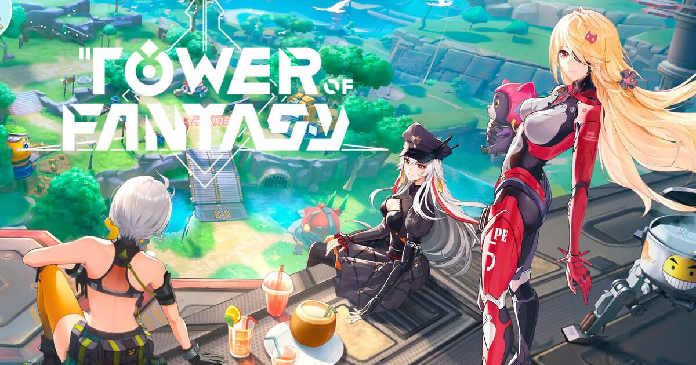
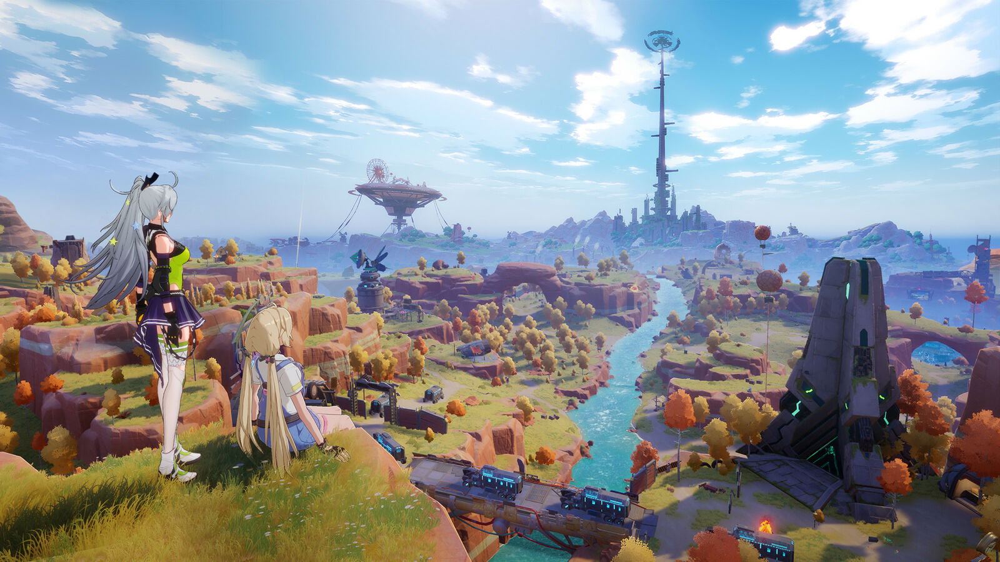
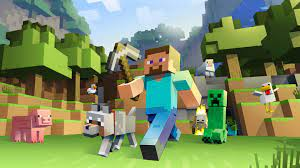
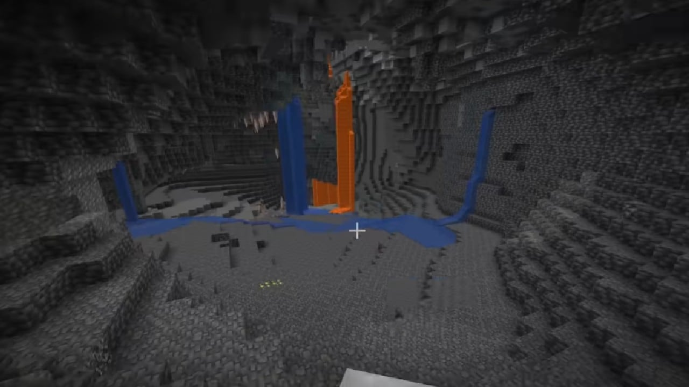

Les Astuces !

Tower of Fantasy :Débuter sur Tower of Fantasy peut sembler intimidant tant l’action-RPG propose de contenu. Rien qu’en explorant le monde ouvert, vous pourrez passer de nombreuses heures à collecter des ressources et à résoudre des énigmes.
Mais dans un premier temps, on vous conseille de vous concentrer sur la quête histoire. Cela vous permettra d’augmenter rapidement votre niveau, mais aussi de débloquer de nombreuses fonctionnalités particulièrement utiles telles qu’une moto (votre premier véhicule) ou encore les quêtes quotidiennes. Vous pourrez ensuite plus facilement partir à la découverte du monde ouvert.
L’exploration dans Tower of Fantasy compte parmi les aspects les plus importants du jeu. Simplement en vous promenant dans le monde ouvert, vous pourrez trouver de multiples ressources, dont des Nucléus noirs et Nucléus or. Ces matériaux servent à invoquer des personnages. Lorsque vous approchez de Nucléus ou de coffres, vous les verrez indiqués sur votre mini-map.
En remplissant la jauge d’exploration des différentes régions de Tower of Fantasy, vous monterez une jauge de progression vous donnant accès à de nombreuses récompenses.


Minecraft :Le diamant dans Minecraft est certainement l’élément le plus recherché par les joueurs. En effet, ce dernier est utilisé dans la création des objets, armures et armes les plus puissantes dans le jeu. Où trouver du diamant dans Minecraft et à quelle couche ? Il va falloir creuser profondément, au niveau de la bedrock (le bloc le plus résistant du jeu).
Avec la mise à jour 1.18 de Minecraft, toute la distribution des minerais a été modifiée. De fait, le diamant n’est plus positionné au même endroit. Dans Minecraft 1.18 vous pourrez trouver du diamant entre les couches 16 à -64, et le meilleur endroit pour le miner est à la couche -54. Le minage optimisé consiste en général à miner sur 1×2 tous les deux blocs et ceci de manière perpendiculaire jusqu’à trouver du diamant.
